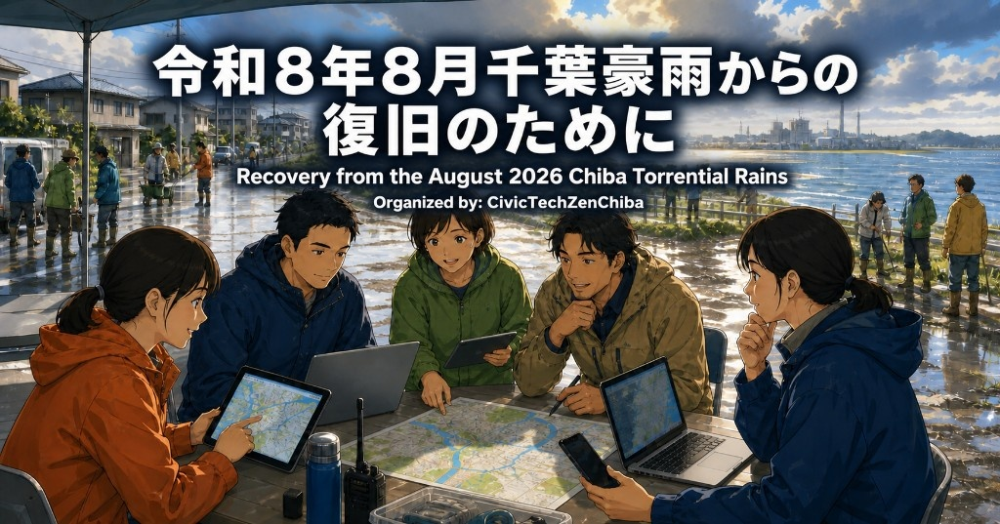
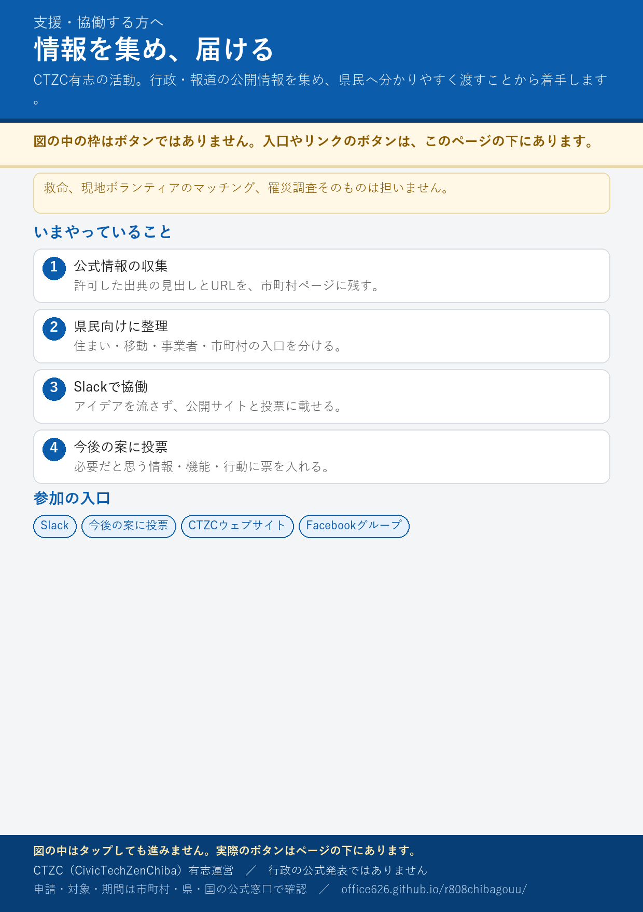

支援・協働する方へ
この図はボタンではありません。 実際のボタンは、図の下にあります。

豪雨被害から一刻も早い復旧を支援する活動。まずは行政・報道の公開情報を集め、県民の皆様へ情報を届ける活動から着手します。今後新たな支援策も検討し実行していきます。
被災後にあるとよいこと（投票）
罹災証明の案内の出し方、制度カレンダー、写真の残し方など、情報・機能・行動の案を並べています。必要だと思うものに投票してください。結果は今後の機能追加や新しいサービスの参考にします。
CivicTechZenChiba
やること（初版）
- 許可リストの URL が開けるか確認する
- 市町村と公式サイトの紐づけの誤りを指摘する
- 要件の Issue / Pull Request
運用スプレッドシート （リンクを知っている人は閲覧可。編集は招待制）